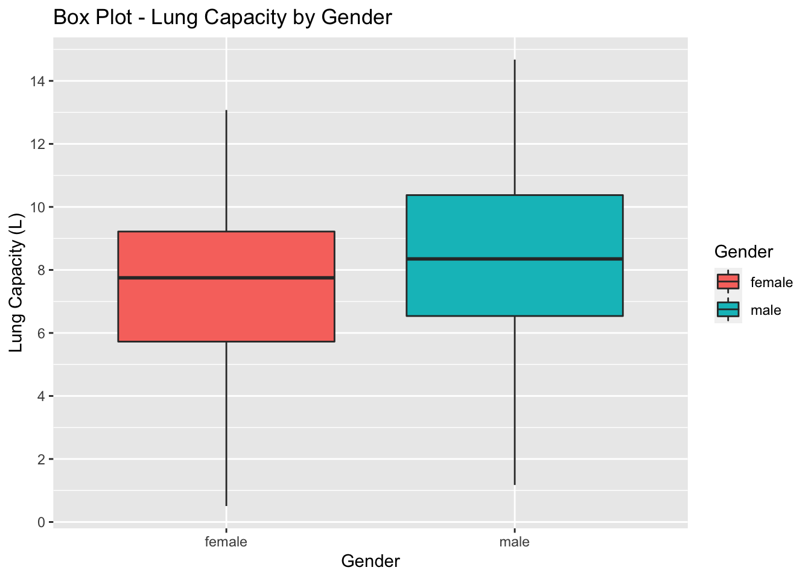
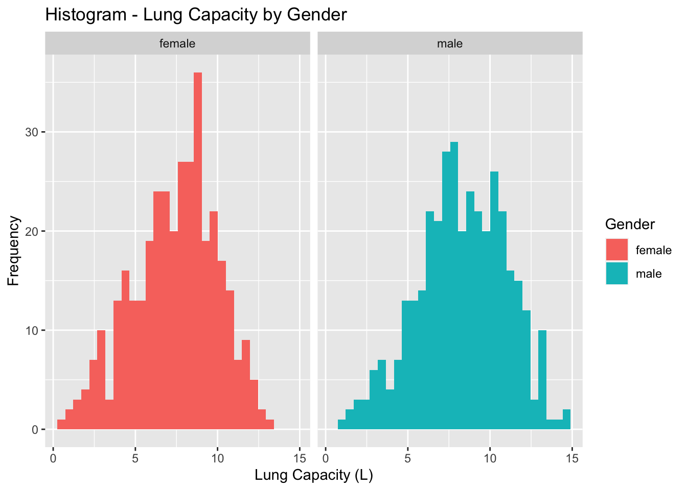

Code
library(readxl)
df <- read_excel("_data/LungCapData.xls")Emma Narkewicz
February 28, 2023
First, let’s read in the data from the Excel file:
The distribution of LungCap looks as follows:
The histogram suggests that the distribution is close to a normal distribution. Most of the observations are close to the mean. Very few observations are close to the margins (0 and 15).
##b
To compare the distribution of the Lung Capacity with respect to Male & Females, I used ggplot to create a side by side boxplot of Lung Capacity for female and males in the sample, with female lung capacity in red & male lung capacity in blue.
Attaching package: 'dplyr'The following objects are masked from 'package:stats':
filter, lagThe following objects are masked from 'package:base':
intersect, setdiff, setequal, union
The box-plot above shows that males in the sample had on average a higher lung capacity than female in the sample, with a higher minimum, Q1, median, Q3, & maximum lung capacity. 50% of the lung capacity of females in the sample was between 5.75 L - 9.25 L with a median lung capacity of ~7.75 L. In contrast, 50% of the lung capacity of males in the sample was between 6.5L - 10.5L with a median lung capacity of ~8.25L.
From the size of the boxes & whiskers, it seems that a good amount of the male & female lung capacity is clustered around the median, but to better visualize the distribution, not just the difference between male females, I created a histogram below facet-wrapped by gender.
`stat_bin()` using `bins = 30`. Pick better value with `binwidth`.
The histogram also reflects a higher lung capacity for men in the sample than women as seen on the x-axis. It also shows that the lung capacity is somewhat normally distributed overall with most of the observations near the mean, though there are several peaks & dips in the histogram where a fewer or more individuals have a specific lung capacity than would be seen in a normal distribution. Additionally, the histogram for female lung capacity has more data concentrated around the mean, making it taller & pointier than the male lung capacity distribution. The male lung capacity histogram on the right has two modes (seen as peaks) at 7L & 11L on the left & right of the mean, unlike in a true normal distribution.
##c
To compare the mean lung capacity of smokers to non-smokers in the sample, I used the group_by(), select(), & summarize() functions to get a table of the mean lung capacity in L for smokers vs. non-smokers in the sample.
# A tibble: 2 × 2
Smoke LungCap
<chr> <dbl>
1 no 7.77
2 yes 8.65The mean lung capacity of smokers (Smoke = yes) was 8.65 L compared to a mean lung capacity of 7.77 L for non-smokers (Smoke = no).
I was not expecting the mean Lung Capacity for smokers in this sample to be higher r than the mean Lung Capacity for non-smokers in the sample. This is because smoking harms lungs & thus is expected to decrease lung capacity.
However, I anticipate that other factors such as age & gender might contribute to this counter-intuitive finding. For example, we saw in the previous question that males in the sample have a higher lung capacity then females. So if more smokers are male, the difference in lung capacity between smokers & non-smokers might be explained by gender more than smoking status.
##d
To examine the relationship between Smoking and Lung Capacity within age groups: “less than or equal to 13”, “14 to 15”, “16 to 17”, and “greater than or equal to 18”, I used the case_when() to recreate a new Age_Range variable corresponding to these age groups.
I first wanted to see the relative age of the sample. As seen in the table below, over half the sample is 13 or younger (484), with the least common age group in thh sample being 18 or older (80).
Age_Range
13 or younger 14 to 15 16 to 17 18 or older
428 120 97 80 This got me curious, as I don’t know many 13-year-olds or people younger than 13 who smoke. The below table shows for each age range how many people smoke vs not smoke. While 27 individuals who were 13 or younger in the sample smoked, this is dwarfed by the 401 13-year-old or younger individuals who don’t smoke. While the number of 13 or younger individuals who smoke is higher than the number of 18 or older individuals who smoke (27 vs. 15), relative to the entire age-group a much higher proportion of the 18 or older age group smoked (15/80) than in the 13 or younger group (27/428).
Smoke
Age_Range no yes
13 or younger 401 27
14 to 15 105 15
16 to 17 77 20
18 or older 65 15After examining the relationship between age & smoking, I then wanted to examine the relationship between age & lung capacity before factoring in smoking status. I would expect that as you go through puberty and become and adult (18+) your lung capacity with increase from before puberty (13 and younger). The table below using group_by(), select(), & summarize_all() follows this expected trend, with mean lung capacity increasing for each age group from 6.41 L for 13 or younger to 10.96 L for 18+ individuals in the sample. The mean lung capacity of 18+ is only slightly higher than the mean lung capacity at 16-17 years-old.
# A tibble: 4 × 2
Age_Range LungCap
<chr> <dbl>
1 13 or younger 6.41
2 14 to 15 9.05
3 16 to 17 10.2
4 18 or older 11.0 Finally, I once again used the group_by(), select(), and summarise_all() function, grouping by age_range & smoking status & calculating the mean lung capacity for smokers & non smokers in each age range, which I will interpret in 1e.
# A tibble: 8 × 3
# Groups: Smoke [2]
Smoke Age_Range LungCap
<chr> <chr> <dbl>
1 no 13 or younger 6.36
2 no 14 to 15 9.14
3 no 16 to 17 10.5
4 no 18 or older 11.1
5 yes 13 or younger 7.20
6 yes 14 to 15 8.39
7 yes 16 to 17 9.38
8 yes 18 or older 10.5 ##e In contrast to 1c, where smokers had a higher mean lung capacity than non-smokers (8.64 L vs 7.77 L), for every age group except for 13 or younger non-smokers had a higher lung capacity than non-smokers.
Considering that in part d it was found that average lung capacity increases with age & that a smaller proportion of younger individuals in the sample smoked than the older students, one possible explanation for the finding in 1c is that the higher mean lung capacity for smokers overall in the sample could be due to a higher age of smokers in the sample, not due to smoking.
It is worth noting also that the sample smoking & nonsmoking mean lung capacity are closer to the mean lung capacity of the 13 & younger & 14-15 year old age groups, reflecting the larger number of younger folks in the sample compare.
For fun, I calculated the mean age for smokers & non smokers in the sample, and smokers indeed were older with a mean age of 14.8, compared to a mean non-smoker age of 12.03.
# A tibble: 2 × 2
Smoke Age
<chr> <dbl>
1 no 12.0
2 yes 14.8#Question 2
##a
To answer these questions I used R more of a calculator, plugging in the frequencies from the HW1 Prior Convictions frequency table to probability equations we learned in class.
The probability that a randomly selected inmate has exactly 2 prior convictions is the P(X=2) which is 0.198.
##b
The probability that a randomly selected inmate has fewer than 2 prior convictions is the P(X < 2) which is equal to the P(X=0 or 1) which is equal to P(X=0) + P(X=1) which equals a probability of 0.694.
[1] 0.6938272##c
The probability that a randomly selected inmate has 2 or fewer prior convictions is the P(X ≤ 2) which is equal to the P(X=0 or 1 or 2) which is equal to P(X=0) + P(X=1) + P(X=2) which equals a probability of 0.891.
[1] 0.891358##d The probability that a randomly selected inmate has greater than 2 prior convictions is the P(X >2) which is equal to the P(X=3 or 4) which is equal to P(X=3) + P(X=4), which gives a probability of 0.109.
Because probabilities should be cumulative, the probability of having greater than 2 prior convictions & the probability of having 2 or less prior convictions should add up to 1. Therefor, 1 - P(X≤2) should equal P(X >2) which we confirm it does.
[1] 0.07901235[1] 0.02962963[1] 0.108642[1] 0.108642##e
The expected value for the number of prior convictions is the long term mean of the sample which can be calculated with the equation: 𝐸(𝑋)=𝜇=∑𝑥𝑃(𝑥)
The expected value for number of prior convictions is 1.286
This is not an integer, but means that in the long-term sample mean will be close to 1, which aligns with the frequency table, where 1 is the most frequent number of prior convictions.
[1] 1.28642[1] 1.28642##f
To calculate the variance of the sample I used the equation Var(X) = Σx^2p − μ^2, where the mean is the expected value calculated in e.
This gives a variance of 0.856 years squared and a standard deviation of 0.925 years.
---
title: "Homework 1"
author: "Emma Narkewicz"
description: "Emma Narkewicz's HW1 Answers"
date: "02/28/2023"
format:
html:
toc: true
code-fold: true
code-copy: true
code-tools: true
categories:
- hw1
- desriptive statistics
- probability
- emma_narkewicz
---
# Question 1
## a
First, let's read in the data from the Excel file:
```{r, echo=T}
library(readxl)
df <- read_excel("_data/LungCapData.xls")
```
The distribution of LungCap looks as follows:
```{r, echo=T}
hist(df$LungCap)
```
The histogram suggests that the distribution is close to a normal distribution. Most of the observations are close to the mean. Very few observations are close to the margins (0 and 15).
##b
To compare the distribution of the Lung Capacity with respect to Male & Females, I used ggplot to create a side by side boxplot of Lung Capacity for female and males in the sample, with female lung capacity in red & male lung capacity in blue.
```{r}
#load libraries
library(dplyr)
library(ggplot2)
ggplot(data = df, aes(x= Gender, y = LungCap, fill = Gender)) +
geom_boxplot() + scale_y_continuous(breaks = c(0,2,4,6,8,10,12,14,16)) +
labs(title = "Box Plot - Lung Capacity by Gender", x = "Gender", y = "Lung Capacity (L)")
```
The box-plot above shows that males in the sample had on average a higher lung capacity than female in the sample, with a higher minimum, Q1, median, Q3, & maximum lung capacity. 50% of the lung capacity of females in the sample was between 5.75 L - 9.25 L with a median lung capacity of \~7.75 L. In contrast, 50% of the lung capacity of males in the sample was between 6.5L - 10.5L with a median lung capacity of \~8.25L.
From the size of the boxes & whiskers, it seems that a good amount of the male & female lung capacity is clustered around the median, but to better visualize the distribution, not just the difference between male females, I created a histogram below facet-wrapped by gender.
```{r}
##Histogram
ggplot(df, aes(x= LungCap, fill = Gender)) + geom_histogram() + facet_wrap(vars(`Gender`)) + labs(title = "Histogram - Lung Capacity by Gender", x = "Lung Capacity (L)", y = "Frequency")
```
The histogram also reflects a higher lung capacity for men in the sample than women as seen on the x-axis. It also shows that the lung capacity is somewhat normally distributed overall with most of the observations near the mean, though there are several peaks & dips in the histogram where a fewer or more individuals have a specific lung capacity than would be seen in a normal distribution. Additionally, the histogram for female lung capacity has more data concentrated around the mean, making it taller & pointier than the male lung capacity distribution. The male lung capacity histogram on the right has two modes (seen as peaks) at 7L & 11L on the left & right of the mean, unlike in a true normal distribution.
##c
To compare the mean lung capacity of smokers to non-smokers in the sample, I used the group_by(), select(), & summarize() functions to get a table of the mean lung capacity in L for smokers vs. non-smokers in the sample.
```{r}
#Mean smokers vs. non-smokers.
df %>%
group_by(`Smoke`) %>%
select(`Smoke`, `LungCap`) %>%
summarize_all(mean, na.rm = TRUE)
```
The mean lung capacity of smokers (Smoke = yes) was 8.65 L compared to a mean lung capacity of 7.77 L for non-smokers (Smoke = no).
I was not expecting the mean Lung Capacity for smokers in this sample to be higher r than the mean Lung Capacity for non-smokers in the sample. This is because smoking harms lungs & thus is expected to decrease lung capacity.
However, I anticipate that other factors such as age & gender might contribute to this counter-intuitive finding. For example, we saw in the previous question that males in the sample have a higher lung capacity then females. So if more smokers are male, the difference in lung capacity between smokers & non-smokers might be explained by gender more than smoking status.
##d
To examine the relationship between Smoking and Lung Capacity within age groups: "less than or equal to 13", "14 to 15", "16 to 17", and "greater than or equal to 18", I used the case_when() to recreate a new Age_Range variable corresponding to these age groups.
```{r}
##Using Case_When to create age_range variable
df_by_age <- df %>%
mutate(Age_Range = case_when(
Age <= 13 ~ "13 or younger",
Age >= 14 & Age < 16 ~ "14 to 15",
Age >= 15 & Age < 18 ~ "16 to 17",
Age >= 16 ~ "18 or older")
)
```
I first wanted to see the relative age of the sample. As seen in the table below, over half the sample is 13 or younger (484), with the least common age group in thh sample being 18 or older (80).
```{r}
#Counts by age
table(select(df_by_age, Age_Range))
```
This got me curious, as I don't know many 13-year-olds or people younger than 13 who smoke. The below table shows for each age range how many people smoke vs not smoke. While 27 individuals who were 13 or younger in the sample smoked, this is dwarfed by the 401 13-year-old or younger individuals who don't smoke. While the number of 13 or younger individuals who smoke is higher than the number of 18 or older individuals who smoke (27 vs. 15), relative to the entire age-group a much higher proportion of the 18 or older age group smoked (15/80) than in the 13 or younger group (27/428).
```{r}
#Counts yes or no smoking by age
table(select(df_by_age, Age_Range, Smoke))
```
After examining the relationship between age & smoking, I then wanted to examine the relationship between age & lung capacity before factoring in smoking status. I would expect that as you go through puberty and become and adult (18+) your lung capacity with increase from before puberty (13 and younger). The table below using group_by(), select(), & summarize_all() follows this expected trend, with mean lung capacity increasing for each age group from 6.41 L for 13 or younger to 10.96 L for 18+ individuals in the sample. The mean lung capacity of 18+ is only slightly higher than the mean lung capacity at 16-17 years-old.
```{r}
#Mean lung capacity by age group
df_by_age %>%
group_by(`Age_Range`) %>%
select(`Age_Range`, `LungCap`) %>%
summarise_all(mean, na.rm = TRUE)
```
Finally, I once again used the group_by(), select(), and summarise_all() function, grouping by age_range & smoking status & calculating the mean lung capacity for smokers & non smokers in each age range, which I will interpret in 1e.
```{r}
##Mean lung cap by age_range smoker vs. non-smoker
df_by_age %>%
group_by(`Smoke`, `Age_Range`) %>%
select(`Age_Range`, `LungCap`, `Smoke`) %>%
summarise_all(mean, na.rm = TRUE)
```
##e
In contrast to 1c, where smokers had a higher mean lung capacity than non-smokers (8.64 L vs 7.77 L), for every age group except for 13 or younger non-smokers had a higher lung capacity than non-smokers.
- For the 13 or younger: non-smoker lung capacity = 6.36L, smoker lung capacity = 7.20 L
- For 14-15: non-smoker lung capacity = 9.14 L, smoker lung capacity = 8.39 L
- For 16-17: non-smoker lung capacity = 10.47 L, smoker lung capacity = 9.38 L
- For 18+: non-smoker lung capacity = 11.07L, smoker lung capacity = 10.51 L
Considering that in part d it was found that average lung capacity increases with age & that a smaller proportion of younger individuals in the sample smoked than the older students, one possible explanation for the finding in 1c is that the higher mean lung capacity for smokers overall in the sample could be due to a higher age of smokers in the sample, not due to smoking.
It is worth noting also that the sample smoking & nonsmoking mean lung capacity are closer to the mean lung capacity of the 13 & younger & 14-15 year old age groups, reflecting the larger number of younger folks in the sample compare.
For fun, I calculated the mean age for smokers & non smokers in the sample, and smokers indeed were older with a mean age of 14.8, compared to a mean non-smoker age of 12.03.
```{r}
#Mean age smoker vs. non-smoker
df %>%
group_by(`Smoke`) %>%
select(`Smoke`, `Age`) %>%
summarise_all(mean, na.rm = TRUE)
```
#Question 2
##a
To answer these questions I used R more of a calculator, plugging in the frequencies from the HW1 Prior Convictions frequency table to probability equations we learned in class.
The probability that a randomly selected inmate has exactly 2 prior convictions is the P(X=2) which is **0.198**.
```{r}
#Calculating P(X=2)
prob_2_pc = 160/810
prob_2_pc
```
##b
The probability that a randomly selected inmate has fewer than 2 prior convictions is the P(X < 2) which is equal to the P(X=0 or 1) which is equal to P(X=0) + P(X=1) which equals a probability of **0.694**.
```{r}
#Calculating P(X<2)
prob_0_pc = 128/810
prob_1_pc = 434/810
prob_less_2_pc = prob_0_pc + prob_1_pc
prob_less_2_pc
```
##c
The probability that a randomly selected inmate has 2 or fewer prior convictions is the P(X ≤ 2) which is equal to the P(X=0 or 1 or 2) which is equal to P(X=0) + P(X=1) + P(X=2) which equals a probability of **0.891**.
```{r}
#Calculating P(X≤2)
prob_0_pc = 128/810
prob_1_pc = 434/810
prob_2_pc = 160/810
prob_equal_or_less_2pc = prob_0_pc + prob_1_pc + prob_2_pc
prob_equal_or_less_2pc
```
##d
The probability that a randomly selected inmate has greater than 2 prior convictions is the P(X >2) which is equal to the P(X=3 or 4) which is equal to P(X=3) + P(X=4), which gives a probability of **0.109**.
Because probabilities should be cumulative, the probability of having greater than 2 prior convictions & the probability of having 2 or less prior convictions should add up to 1. Therefor, 1 - P(X≤2) should equal P(X >2) which we confirm it does.
```{r}
#Calculating P(x>2) the first way
prob_3_pc = 64/810
prob_3_pc
prob_4_pc = 24/810
prob_4_pc
prob_greater_2_pc = prob_3_pc + prob_4_pc
prob_greater_2_pc
#Calculating P(x>2) the second way
same = 1 - prob_equal_or_less_2pc
same
```
##e
The expected value for the number of prior convictions is the long term mean of the sample which can be calculated with the equation:
𝐸(𝑋)=𝜇=∑𝑥𝑃(𝑥)
The expected value for number of prior convictions is **1.286**
This is not an integer, but means that in the long-term sample mean will be close to 1, which aligns with the frequency table, where 1 is the most frequent number of prior convictions.
```{r}
#Expected value calc
expected_value = (0 * prob_0_pc) + (1 * (prob_1_pc)) + (2 * (prob_2_pc)) + (3* (prob_3_pc)) + (4 * (prob_4_pc))
expected_value
##Check that mean same
((0*128)+(1*434) + (2*160) + (3*64) + (4*24))/810
```
##f
To calculate the variance of the sample I used the equation Var(X) = Σx^2p − μ^2, where the mean is the expected value calculated in e.
This gives a variance of **0.856** years squared and a standard deviation of **0.925** years.
```{r}
#Calculating variance
Variance = (((0^2) * prob_0_pc) + ((1^2)* prob_1_pc) + ((2^2) * prob_2_pc) + ((3^2) * prob_3_pc) + ((4^2) * prob_4_pc)) - (expected_value^2)
Variance
#Calculating sd from variance
sd = sqrt(Variance)
sd
```